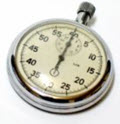
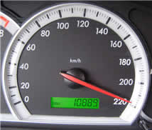

"Unit" of Measurement
In Measurement we talk about "Units" ... what are they?
A unit is any measurement that there is 1 of.
So 1 meter is a unit.
And 1 second is also a unit
And 1 m/s (one meter per second) is also a unit, because there is one of it.
And so on ...
Without the "1"
It is also common to drop the "1" in front and just talk about the type of measurement as a unit.

Example: a commonly used unit of time is the second
We don't say a stopwatch measures "1 seconds", we say it measures "seconds".
So "Unit" is a general term that means the type of measurement. And people understand that we mean just "1" of it.
So a conversation might go like this
Alex: "It measures 100"
Sam: "In what Unit?"
Alex: "Centimeters"
Example: Speedometer
|  |
What unit does this Speedometer measure? It measures km/h (kilometers per hour) So "220" means 220 kilometers per hour. |
Abbreviation
We usually write units just using their abbrevations.
Example: km for kilometer
Example: m/s (or m s-1) for meter per second
m/s is a unit of speed
Example: kg/m3 (or kg m-3) for kilogram per cubic meter
kg/m3 is a unit of density: how much mass per unit of volume.
Standardized
Units of Measurement are "standardized", meaning that there is a well-defined standard way to measure 1 of them.
Example: For many years (1889 to 1960) there was the International Prototype Metre bar to show people exactly what 1 meter was.
But that wasn't accurate enough!
Now "1 Meter" is defined as how far light travels in 1/299,792,458 of a second.
Different Systems of Measurement
Units can be grouped together to make a "System".
Example: the meter, kilogram and second (together with a few other units) together make up the "SI" Metric System of Measurement.
Example: the inch, foot, yard and mile are the units of length in the US Standard System of Measurement
Unit Price
Unit Price tells us the cost per liter, per kilogram, per pound, etc, of what we want to buy.
It is a good way of comparing costs of what we buy.
Example: What is best
- 2 liters of Milk at $3.80, or
- 1.5 liters of Milk at $2.70 ?
In this case the "Unit" is 1 liter, and the Unit Prices are:
- $3.80 / 2 liters = $1.90 per liter
- $2.70 / 1.5 liters = $1.80 per liter
So the lowest Unit Price (and the best bargain) is 1.5 liter at $2.70.